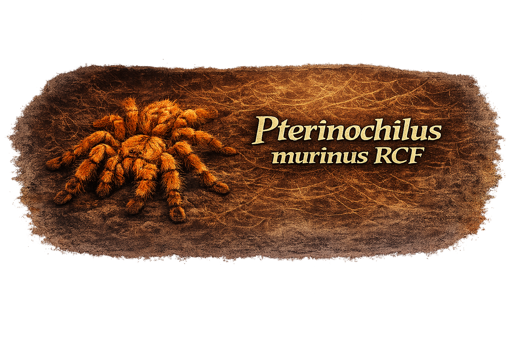
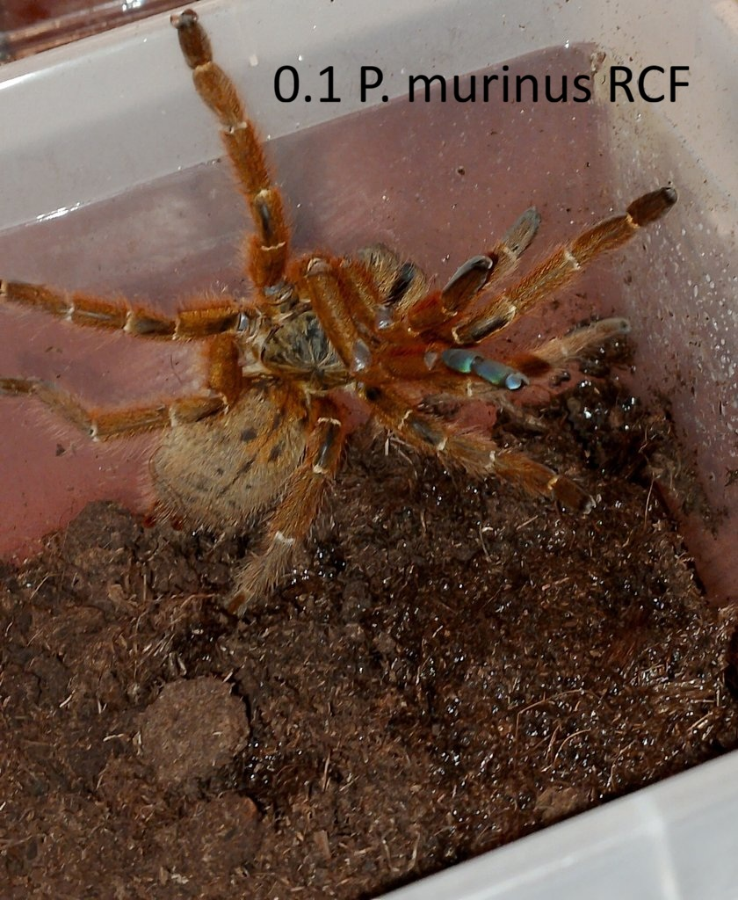

Latinský název: Pterinochilus murinus
Barevná forma: RCF (Red Color Form)
Běžný název: Orange Baboon Tarantula (OBT)
Původ: východní až jižní Afrika (např. Keňa, Tanzanie, Mosambik; druh je ale rozšířen i v dalších částech Afriky)
Typ: terestriální sklípkan, který vytváří mělké nory a rozsáhlé zapředené úkryty
Velikost v dospělosti: přibližně 13–15 cm rozpětí nohou
Délka života: samice 12–15 let, samec 3–4 roky

Pterinochilus murinus RCF je velmi rychlý a výrazně defenzivní africký sklípkan známý svou sytě oranžovou až červenooranžovou barvou. Právě forma RCF patří v chovu mezi nejoblíbenější barevné varianty tohoto druhu. V hobby je tento sklípkan všeobecně známý pod zkratkou OBT.
Nejde o čistě „norový“ druh v tom smyslu jako u vyloženě fossoriálních sklípkanů. Přesnější je popsat jej jako terestriální až polovnorový druh, který si vytváří rozsáhlé zapředené tunely a úkryty v substrátu, pod korkem i kolem dalších opor v teráriu. V zajetí je známý tím, že často velmi hustě zapřede velkou část prostoru.
Patří mezi tzv. Old World sklípkany, takže nemá obranné chloupky. Při vyrušení spoléhá především na rychlost, výstražný postoj a případný obranný útok. Kvůli velmi rychlým reakcím, výrazně defenzivní povaze a medicínsky významnějšímu jedu než u většiny běžných New World druhů je vhodný spíše pro zkušenější chovatele.
Zajímavostí je, že ačkoli bývá často prezentován jen jako „agresivní oranžový sklípkan“, z biologického hlediska je přesnější říkat, že je silně defenzivní. Nejde tedy o zvíře, které by aktivně „vyhledávalo útok“, ale o druh, který se při narušení velmi rozhodně brání. Další zajímavostí je existence více chovatelsky známých barevných forem, z nichž RCF je jedna z nejznámějších. Další formy: TCF – Typical Color Form, DCF – Dark Color Form, OCF – Orange Color Form, UMV - Usambra Mountains form.
Terárium: spíše horizontálně laděné terárium s dostatečnou plochou dna, vrstvou substrátu a kotevními body pro pavučiny (např. přibližně 30 × 20 × 20 cm nebo větší pro dospělého jedince)
Úkryty: korek, kusy kůry, duté větve nebo jiné opory, kolem kterých může vytvářet zapředené tunely
Teplota: cca 24–28 °C
Vlhkost: nižší až střední; vhodný je převážně sušší chov s miskou na vodu a případně jen lokálně mírně vlhčí částí substrátu
Substrát: kokosové vlákno, rašelina, směs vhodná k hrabání (10–15 cm)
Krmí se běžným živým hmyzem, například cvrčky nebo šváby. Mláďata přijímají menší kořist častěji, dospělci obvykle přibližně jednou týdně až podle kondice i o něco méně často. Nezkonzumovanou potravu je vhodné po zhruba 24 hodinách odstranit.
← zpět na nabídku